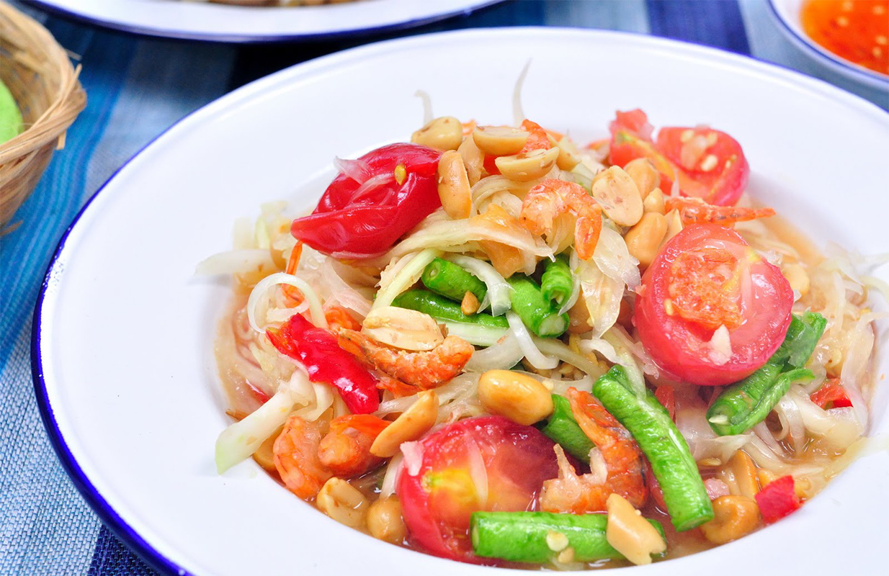

More Website Templates @ TemplateMonster.com - December 02, 2013!
Our Menu

Salmon Steak
Ingredients
- Salmon X 400 grams
- Minced garlic X 3 cloves
- Salt
- Pepper
Olive oil
- Lemon wedges
- Small set of salad
Instructions
- 1) Preheat the oven to 425 degree Fahrenheit
- 2) Clean the salmon and dry with a paper towel
- 3) Drizzle some olive oil over the top of each salmon with your fingers or a pastry brush
- 4) Sprinkle the salmon generouslyl with salt and pepper
- 5) Place the salmon in the roasting pan and transfer to the oven.
- 6) Roast for 4 to 6 minutes per half-inch thickness of salmon
- 7) Salmon is done when easily flaked
- 8) Salmon steak is ready to serve with salad

Pad thai
Ingredients
- 150 grams Thai rice noodles
- 1/3 cup extra firm tofu
- 50 grams raw shrimp
- 1.5 tablespoons soy sauce
- Minced garlic X 3 cloves
- Egg X 1
- Bean sprouts X 1 cup
- 2-3 tablespoons vegetable oil
- 2-3 cup dry roasted unsalted peanuts, chopped
- 4 green onions, sliced
- lime wedges for serving
Sauce ingredients
- 2 spoons tamarind paste
- 3-4 tablespoons brown sugar
- 3 tablespoons white vinegar
- 1 tablespoon lime juice
- 2 tablespoon fish sauce
- 1 tablespoon soy sauce
Instructions
- 1) Combine all the sauce ingredients together in a cup, stirring to dissolve sugar. Set aside.
- 2) Bring a large pot of water to boil. Dunk in rice noodles and cook approx. 6 minutes, OR until soft enough to bend easily, but still firm.
- 3) Drain and rinse noodles briefly with cold water to keep them from sticking. Set aside.
- 4) Heat a large frying fan over medium-high heat. Add the vegetable oil in and swirl around, then add the garlic.
- 5) Add the shrimp, continuing to stir-fry until they turn pink.
- 6) When the pan becomes dry, add 1-2 tablespoons of the sauce in
- 7) Push all the shrimps to the side of the pan, then crack egg into the center and stir-fry quickly to cramble.
- 8) Add noodles in with 3-4 tablespoons of the sauce. Using two utensils, lift and put the noodles in,with tofu and other ingredients.
- 9) Continue adding more sauce every minute or two until all has been added and noodles are chewy-delicious and a little bit sticky. (approx. 8-10mins)
- 10) Put bean sprouts and green onion in. Remove from heat and taste-test, adding more fish sauce until desired taste is acheived.
- 11) Portion out onto individual plates and add a lime wedge on the side. Top with a small heap of chopped nuts. ENJOY!

Tom yam goong
Ingredients
- 5 medium-size shrimp
- 2 stalks fresh lemongrass
- 2 tbsp roasted chilli paste
- 1 can straw mushrooms
- 4 kaffir lime leaves
- 1- inch piece fresh ginger, sliced
- 2 red chilles, sliced
- 2 tablespoons fish sauce
- 2 limes, juiced
- 2 green onions, sliced
- 1 handful fresh cilantro, chopped
Instructions
- 1) Bring the stock to the boil over medium heat in a saucepan.
- 2) Add the lemongrass, kaffir lime leaves, ginger, and chiles
- 3) Lower the heat to medium-low, cover, and simmer for 15 minutes to let the spices infuse the broth.
- 4) Uncover and add the fish sauce, sugar, and mushrooms. Simmer for 5 minutes.
- 5) Toss in the shrimp and cook for about 8 minutes until they turn pink.
- 6) Remove from the head and add the lime juice, green onions, and cilantro.
- 7) Taste for salt and spices; you should have an equal balance of spicy, salt, and sour.
- *** It's a good idea to tell your guests that lemongrass and lime leaves are for flavor only and should be avoided when eating the soup.

Papaya salad
Ingredients
- 1 small green (firm,unripe)papaya
- 1 cup or more cherry tomatoes, cut in half
- 2 medium carrts
- 1/2 cup roasted peanuts
- 5 green beans (optional)
1 fresh red chilli, sliced, seeds removed
- 2 tablespoons fish sauce
- 3 tablespoons lime juice
- 2 tablespoons brown sugar
- 3/4 cup shrimp meat
Instructions
- 1) Place shredded green papaya and carrots in the bowl of a mortar.
- 2) Smash and grind to soften papaya with pestle until the flesh turns a milky-white color. This will help the salad absorb more of the dressing. Remove to a medium-sized bowl.
- 3) Place chilies, garlic, brown sugar, salt, and lime peel in the mortar bow. Work into a paste. Add tomatoes.
- 4) Add mixture to papaya and carrots, and add soy sauce and lime juice. Toss to comibine. Adjust seasonings if needed.
- 5) Top with peanut and serve

Mashed Potatoes
Ingredients
- Potatoes X 3
- 3 tablespoons Butter
- 500 ml Milk
Instructions
- 1) In a large pot, bring a gallon of water and 2 tablespoos salt to a boil over high heat.
- 2) Peel and quarter potatoes, keep them in cold water until ready to cook. (This can be done up to 4 hours in advance.)
- 3) Add potatoes to boiling water and boil about 15 to 20 minutes, until soft; a knife should go in with almost no resistance.
(It is better to overcook than to undercook.)
- 4) In a saucepan or a microwave oven, heat butter and milk together until butter melts and mixture steams.
- 5) Drain potatoes well and return to pot. Using an extruding masher, mash hot potatoes until smooth
- 6) Lightly mix in about half of hot butter mixture, just until blended. Test for salt and add more butter mixture until seasoned to your like.
- ***To keep the potatoes hot until ready to serve, transfer to the bowl, dot top with butter, cover tightly and keep in a warm place.

Mashed Potatoes
Ingredients
- 200 grams Soy bean
- 1.5 L water
- 20 grams Sugar
Instructions
- 1) Soak all the beans for at least 8 hours. Drain, rinse, and discard water.
- 2) Combine soaked beans with 1.5L fresh water. In a blender, process beans with water until smooth.
- 3) Strain into a pot through a double layer of a fine sieve.
- 4) Boil soy milk for 15 minutes. Stir frequently to prevent skin from forming. Stir in sugar to taste.
- 5) Cool to room temperature, then regrigerate.

Musli parfait
Ingredients
- 1 cup nonfat plain yogurt
- 1/4 teaspoon vanilla
- 2 cups frozen mixed berries
- 2 tablespoons honey
- 1 cup rolled oats and milk
Instructions
- 1) Divide half the muesli between four 1 cup-capacity glasses. Spoon half the yoghurt over muesli, then half the berries.
- 2) Repeat the layers. Drizzle each one with honey and serve.